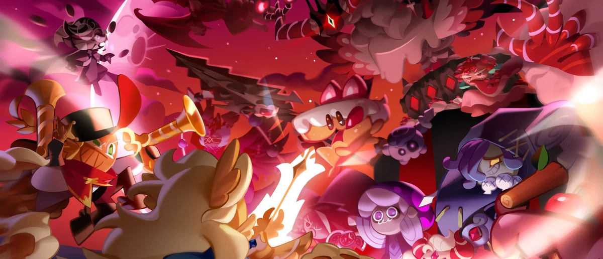
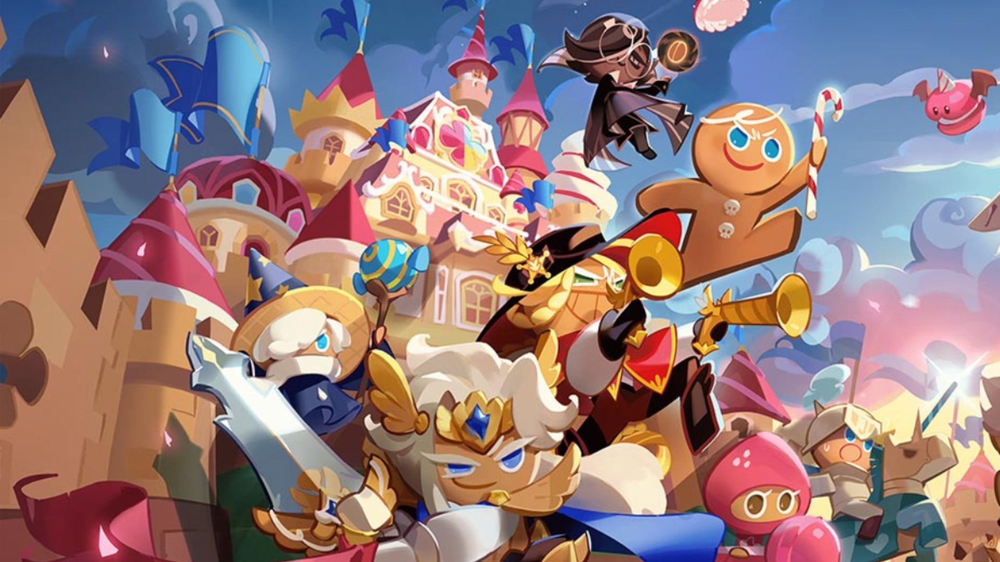
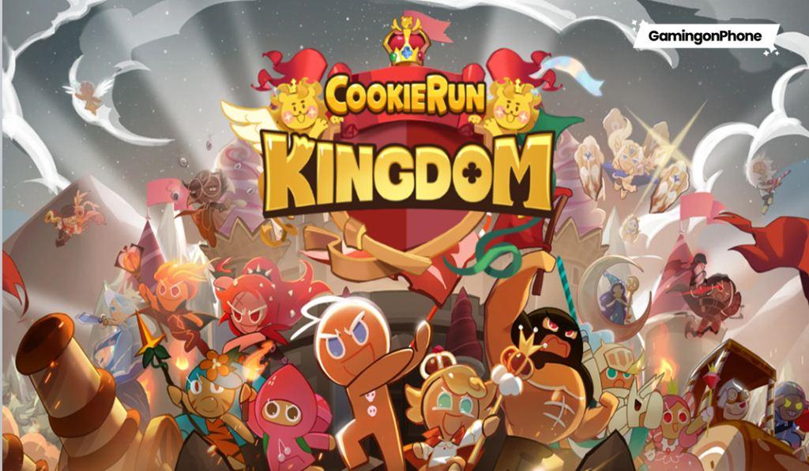
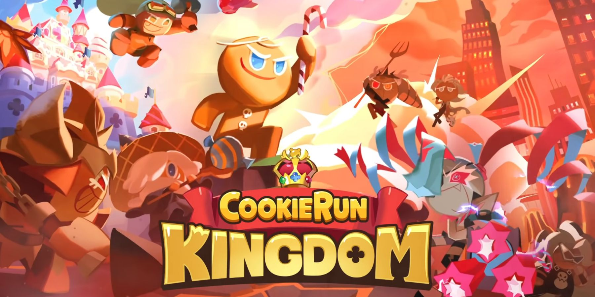

<html>
<head>
    <link rel="stylesheet" type="text/css" href="./css/main.css">
    <link rel="stylesheet" type="text/css" href="./css/slick.css" />

    
    <title>Cookie run kingdom</title>
</head>


</body>
</html>

<html>

</body>

<body>
    <header class="menu-principal">
        <main>
            <div class="header-1">
                <div class="logo">
                    
                </div>
                <div class="redes-sociais">
                    <ul>
                        <li>
                            <a href="https://twitter.com/CRKingdomEN">
                                
                            </a>
                        </li>
                        <li>
                            <a href="https://www.facebook.com/CRKingdomEN/">
                                
                            </a>
                        </li>
                        <li>
                            <a href="https://www.instagram.com/cookierunkingdom/">
                                
                            </a>
                        </li>
                        
                    </ul>
                </div>
            </div>
        </main>
    </header>
    <main class="col-100 menu-urls">
        <div class="header-2">
            <div class="menu">
                <ul>
                    <li>
                        <a href="">Home</a>
                    </li>
                    <li>
                        <a href="sobre.html">Sobre</a>
                    </li>
                    
                    <li>
                        <a href="contactos.html">Contactos</a>
                    </li>
                    
                </ul>
            </div>
            <div class="busca">
                <input placeholder="Search Something" type="text" />
            </div>
        </div>
    </main>
    <div class="col-100">
        <div class="slider-principal">
            
            
            
            
        </div>
    </div>
    <div class="col-100">
        <div class="content texto-destaque">
            
            
            <h1>Cookie run Kingdom </h1>
            <p>Cookie Run: Kingdom é um jogo gacha de RPG de ação da Devsisters e o sexto jogo da série Cookie Run. No início do jogo, os jogadores recebem um terreno para construir estruturas e amenidades e auxiliar o jogador na coleta de recursos. Para desbloquear mais itens/recursos, o jogador deve subir de nível no Cookie Castle, nos edifícios de produção e na Fountain of Abundance.</p>

            
        </div>
    </div>
    <div class="col-100 bloco-imagens-texto">
        <div class="content" style="margin-left: 18%; float: left;">
            <div class="col-3 bloco-texto bloco-imagem">
                
                <p><b>Comuns </b></p>
                <p> Cookies comuns são a raridade mais baixa do jogo. As chances de obtê-los ou seus respectivos Soulstones no Gacha é de cerca de 42,0%, tornando-os os Cookies mais prováveis ​​para os jogadores promoverem ao máximo. Existem atualmente 7 cookies comuns no jogo.
                </p>
            </div>
            <div class="col-3 bloco-texto bloco-imagem">
                
                <p><b>Raros</b></p>
                <p>Cookies Raros são a segunda raridade mais baixa do jogo. A chance de obtê-los ou seus respectivos Soulstones no Gacha é de cerca de 37,6%. Atualmente, existem apenas 14 cookies raros no jogo.

                </p>
            </div>
            <div class="col-3 bloco-texto bloco-imagem">
                
                <p><b>Épicos</b></p>
                <p>Cookies épicos são a raridade intermediária no jogo. As chances de obtê-los ou suas respectivas Soulstones no Gacha são de cerca de 19,3%. Existem atualmente 55 Epic Cookies no jogo, sempre aumentando a cada grande atualização.

                </p>
            </div>
            
        </div>
        <div class="content" style="margin-left: 18%; float: left;">
            
            <div class="col-3 bloco-texto bloco-imagem">
                
                <p><b>Super épicos</b></p>
                <p>Super Epic Cookies são uma raridade de Cookies acima dos Epic Cookies, introduzidos pela primeira vez na atualização do Council of Heroes (v3.0). As chances de obtê-los ou suas respectivas Soulstones no Gacha são de cerca de 0,330%. Existem atualmente 3 Super Epic Cookies no jogo.


                </p>
            </div>
            <div class="col-3 bloco-texto bloco-imagem">
                
                <p><b>Lendários</b></p>
                <p>Cookies lendários, como o próprio nome sugere, são cookies de status e poder míticos e divinos. Cada um deles tem influência significativa sobre Earthbread e seus habitantes. Os lendários estão no mesmo nível da raridade Ancient e atualmente têm 0,054% de chance de serem retirados do Cookie Gacha. 

                </p>
            </div>
            <div class="col-3 bloco-texto bloco-imagem">
                
                <p><b>Ancient</b></p>
                <p>Pure Vanilla Cookie, Hollyberry Cookie e Dark Cacao Cookie são atualmente os únicos Heróis jogáveis. Eles podem ser obtidos por meio de todos os Cookie Gachas com 0,054% de chance de serem puxados e têm uma chance maior de serem puxados pelo Nether-Gacha, um evento especial que ocorre durante a atualização de lançamento de um Ancient Cookie. 

                </p>
            </div> 

            
            
            
            
        </div>
    </div>
    <footer>
        <div class="col-100 footer">
            <div class="content">
                </div>

                <div class="col-4">
                    

                    <script language="JavaScript">
                        var data = new Date()
                        var year = data.getYear()
                        if (year < 2000)
                            year += (year < 1900) ? 1900 : 0
                        var day = data.getDay()
                        var month = data.getMonth()
                        var daym = data.getDate()
                        if (daym < 10)
                            daym = "0" + daym
                        var dayarray = new Array("Domingo", "Segunda-feira", "Terça-feira", "Quarta-feira", "Quinta-feira", "Sexta-feira", "Sábado") 
                        var montharray = new Array(" de Janeiro de ", " de Fevereiro de ", " de Março de ", "de Abril de ", "de Maio de ", "de Junho de", "de Julho de ", "de Agosto de ", "de Setembro de ", " de Outubro de ", " de Novembro de ", " de Dezembro de ")
                        document.write( " " + dayarray[day] + ", " + daym + " " + montharray[month] + year + "&nbsp;")
                    </script>
                </div>


                
            </div>
        </div>
    </footer>
    
    <script type="text/javascript" src="./js/nome.js"></script>
    <script type="text/javascript" src="./js/jquery.js"></script>
    <script type="text/javascript" src="./js/jquery-migrate.js"></script>
    <script type="text/javascript" src="./js/slick.min.js"></script>
    <script type="text/javascript" src="./js/main.js"></script>
    <script type="text/javascript" src="./js/data.js"></script>
</body>

</html>